의령 한복 가족사진 — 한복을 입으면 가족의 걸음이 느려집니다
2026-10-22 발행
의령 한복 가족사진을 찍으러 오시는 분들은 대개 옷부터 꺼냅니다. 장롱 깊숙한 곳에 있던 저고리와 치마, 아이가 돌에 입었던 색동저고리. 한복은 입는 순간 사람의 걸음을 느리게 만듭니다. 치마폭을 한 손으로 잡고, 허리를 펴고, 앞을 천천히 봅니다. 그 느린 걸음이 사진에 그대로 남습니다.
평소에는 허리를 조금 굽히고 다니시던 어머니도 한복을 입으면 등이 곧게 펴집니다. 앉으실 때도 무릎을 모으고 손을 위에 올립니다. 옷이 자세를 만들고, 자세가 표정을 만듭니다. 사진관 문을 연 뒤로 같은 장면을 오래 보고 있습니다. 그래도 한복 입은 가족이 마루에 서는 순간은 늘 조금 특별합니다.
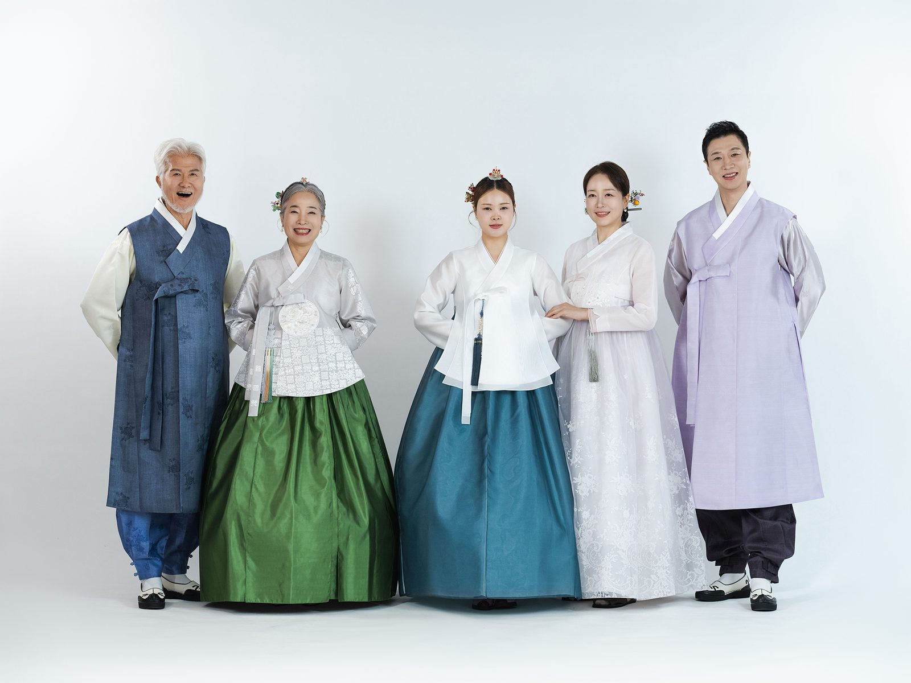
첫 사진은 다섯 명입니다. 할머니가 초록 치마에 흰 저고리를 입으시고, 두 젊은 여성은 청록과 흰색 치마를, 두 남성은 남색과 연보라 두루마기를 입었습니다. 한복은 색을 맞추기보다 한 사람씩 다른 색을 주는 편이 자연스럽습니다. 대신 여성의 치마 색이 사진 전체의 리듬을 만듭니다. 초록과 청록이 있으면 나머지는 흰색과 연한 색으로 비워 두는 것이 좋습니다.
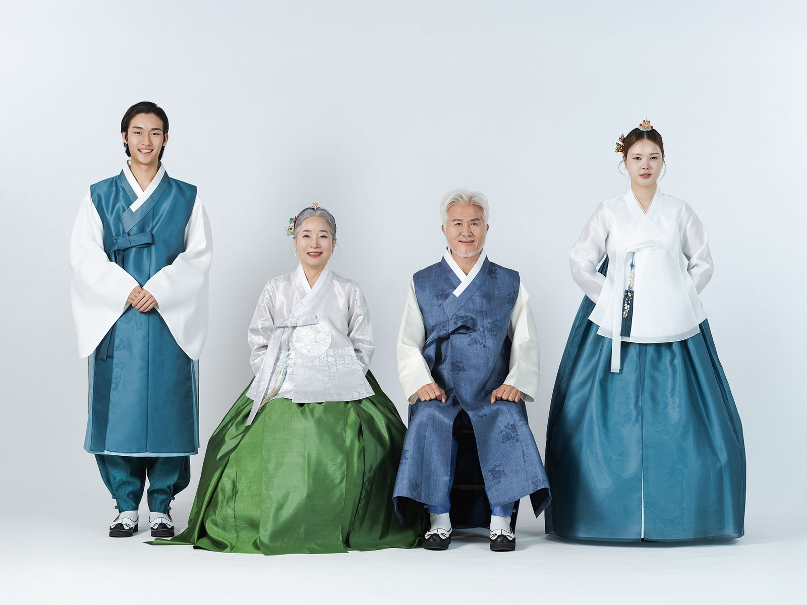
두 번째는 네 명입니다. 할아버지가 남색 조끼를 입고 할머니 옆에 앉으시고, 젊은 두 사람이 양옆에 섰습니다. 한복은 어르신이 가운데 앉는 배치가 가장 잘 어울립니다. 치마폭이 넓어 앉으면 사진의 아래가 자연스럽게 채워지고, 뒤에 선 사람들의 두루마기 자락이 배경을 정리해 줍니다.
어르신 한복은 색이 진할수록 사진에서 또렷합니다. 남색, 자주, 짙은 초록은 흰 배경에서도 배경이 어두워도 잘 견딥니다. 반대로 연한 분홍과 하늘색은 젊은 사람에게 잘 맞습니다. 한복을 고르실 때 어르신께 진한 색을 권하고 젊은 사람에게 연한 색을 권하는 이유가 여기 있습니다. 물론 본인이 좋아하시는 색이 먼저입니다.
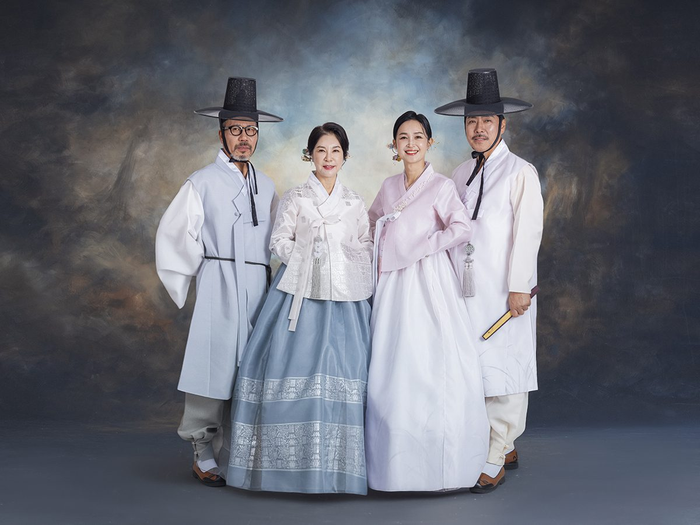
세 번째는 먹빛 배경입니다. 두 남성이 갓을 쓰고 여성 둘은 분홍과 흰 저고리를 입었습니다. 갓은 사진의 무게를 바꿉니다. 같은 사람, 같은 옷인데 갓을 쓰면 자세가 달라지고 시선이 앞으로 가지 않습니다. 처음 갓을 쓰신 분은 어색해하시지만, 사진을 보시면 대개 마음에 들어 하십니다.
한복 촬영은 순서가 중요합니다. 갓과 노리개, 머리 모양을 먼저 정하고 그다음 자리를 잡습니다. 옷을 입은 채로 자리를 옮기면 자락이 흐트러지기 때문에, 한 자리에서 여러 컷을 찍고 다음 자리로 옮깁니다. 이 순서를 지키면 같은 옷으로도 사진이 겹치지 않습니다.
의령에서 한복 가족사진은 언제 찍는 게 좋을까요? 설과 추석이 가까운 때는 자연스럽게 한복이 나옵니다. 그렇지 않은 계절에도 괜찮습니다. 오히려 명절 직후에는 다들 지쳐 있어서 표정이 굳기 쉽습니다. 가족이 모이기로 정한 날, 그날이 가장 좋은 날입니다.
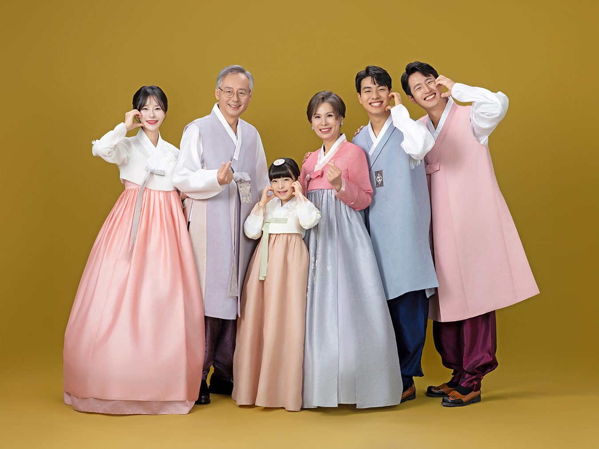
네 번째는 노란 배경에 여섯 명입니다. 분홍과 연보라, 연한 하늘색 저고리가 노란 벽 앞에서 밝게 살아납니다. 밝은 배경은 웃는 얼굴과 잘 어울립니다. 이 컷은 정면으로 서서 손을 흔드는 정도인데, 아이들이 먼저 손을 들면 어른들도 따라 합니다. 사진에서 손이 올라가면 사진 전체의 기분이 올라갑니다.
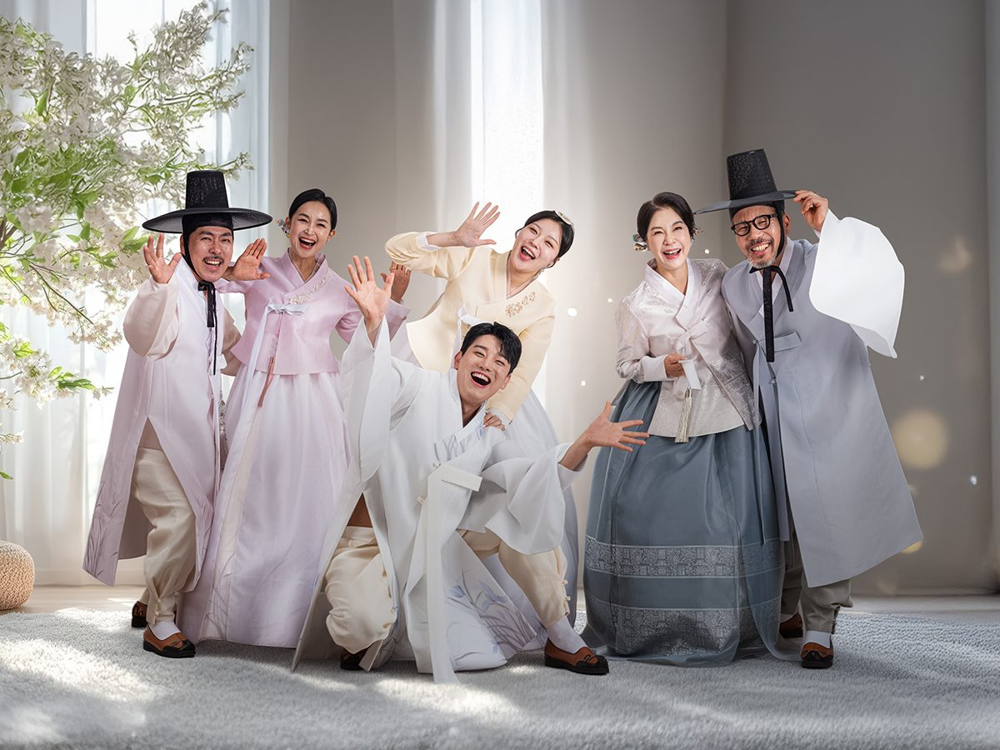
다섯 번째는 흰 방에서 여섯 명입니다. 여기서도 두 남성이 갓을 쓰고 있습니다. 갓이 있으면 사진의 위쪽이 채워져서 인원이 적어도 화면이 비지 않습니다. 가족이 많은 컷은 아이가 지치기 전에 먼저 찍습니다. 촬영에서 가장 먼저 지치는 사람은 늘 아이입니다.
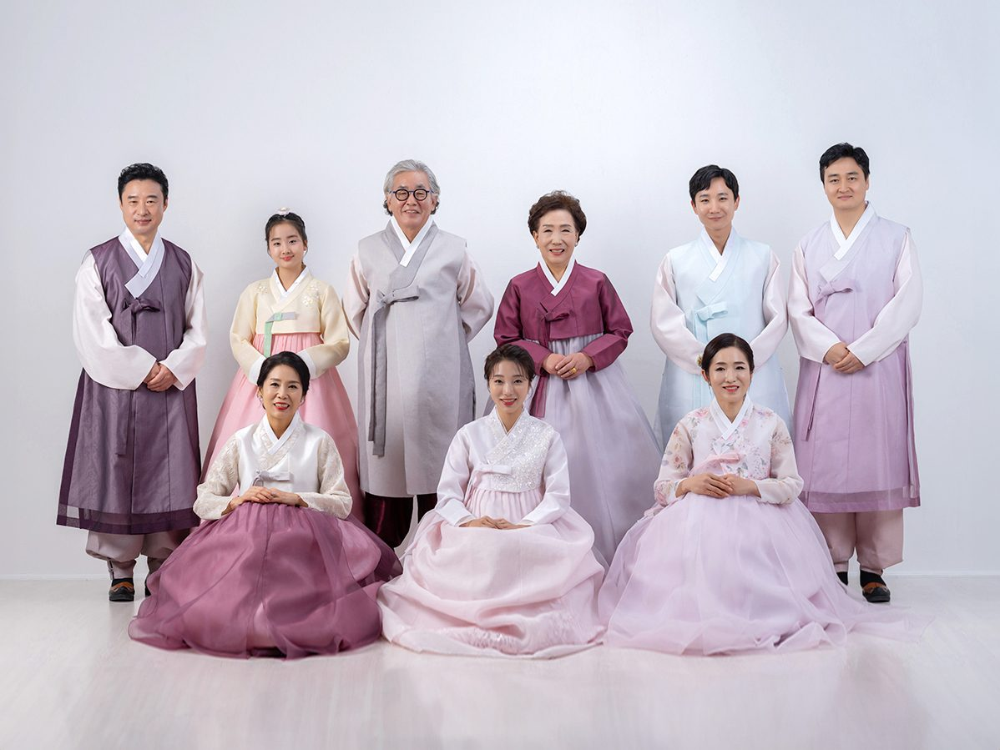
여섯 번째는 여덟 명입니다. 자주색과 연보라로 색을 두 계열만 남겼습니다. 색을 두 계열로 줄이면 인원이 많아도 사진이 정돈됩니다. 앞줄 세 사람은 땅에 앉고 나머지는 서게 했습니다. 앉은 사람의 어깨 높이에 선 사람의 무릎이 오도록 맞추면 두 줄이 한 덩어리로 보입니다.
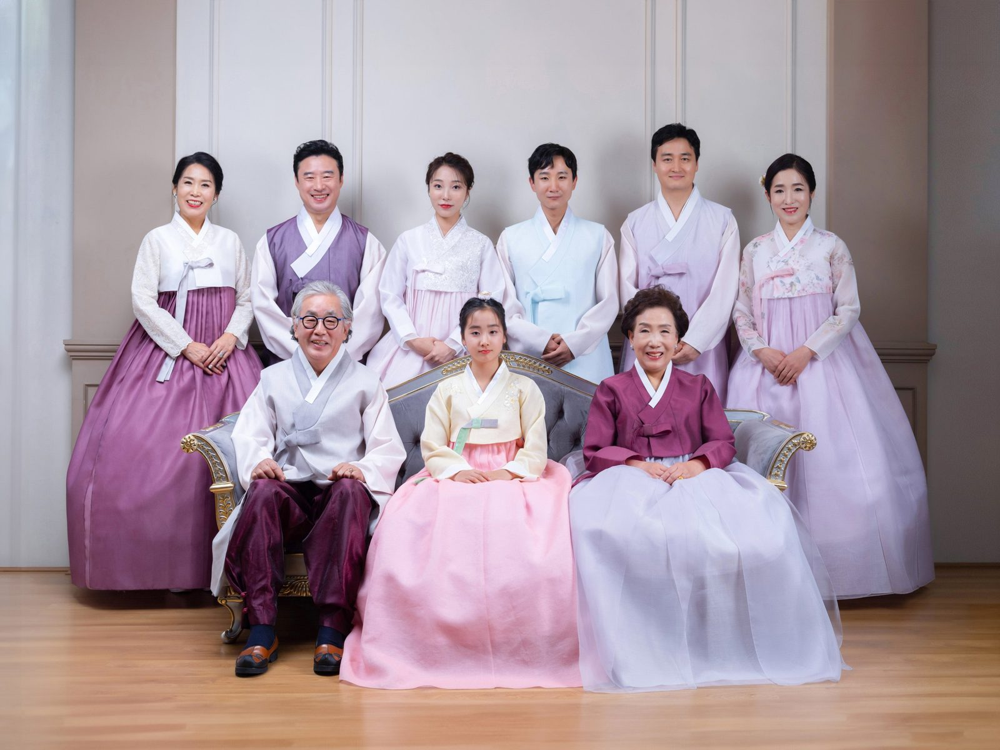
일곱 번째는 아홉 명입니다. 마루에 할아버지와 할머니가 가운데 앉으시고 세대가 층층이 둘러섰습니다. 마루는 한복과 잘 맞는 자리입니다. 나무 바닥의 결이 치마 자락을 받아 주고, 기둥이 사진의 세로를 잡아 줍니다. 이 자리는 앉을 사람과 설 사람을 미리 정해 두어야 어수선해지지 않습니다.
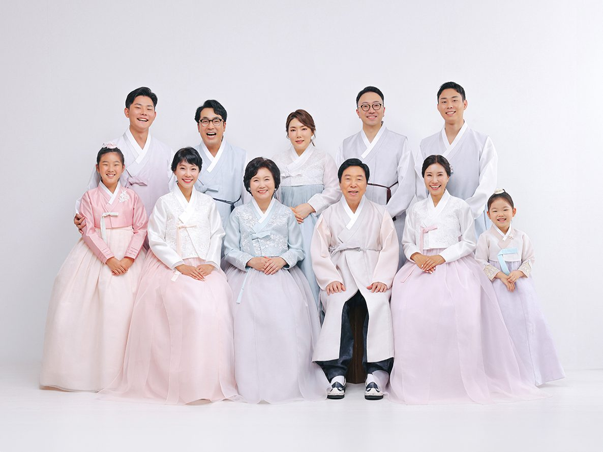
여덟 번째는 열한 명입니다. 흰 배경에서 파스텔로 맞췄습니다. 마루에서 찍은 사진과 색이 달라서 전혀 다른 사진처럼 보입니다. 대가족 촬영에서는 이렇게 두세 가지 배경을 오가며 찍습니다. 한 가지 배경에서 열 장을 찍는 것보다, 세 배경에서 서너 장씩 찍는 편이 사진 고르기가 쉽습니다.
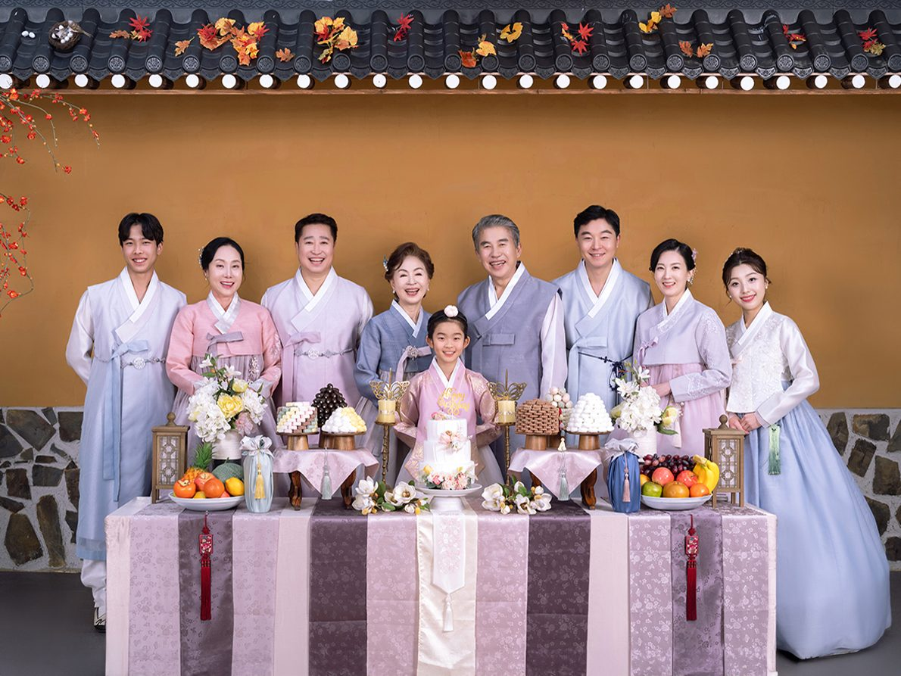
아홉 번째는 상을 차린 자리입니다. 긴 상에 과일과 떡, 꽃과 감을 올리고 가족이 그 뒤에 섰습니다. 상차림은 사진의 아래쪽을 채워 주고, 색이 많아서 사진이 화사해집니다. 집에서 드시던 그릇을 가져오셔도 좋습니다. 어떤 상을 차릴지는 가족마다 다르니 예약하실 때 말씀해 주시면 그에 맞춰 준비합니다.
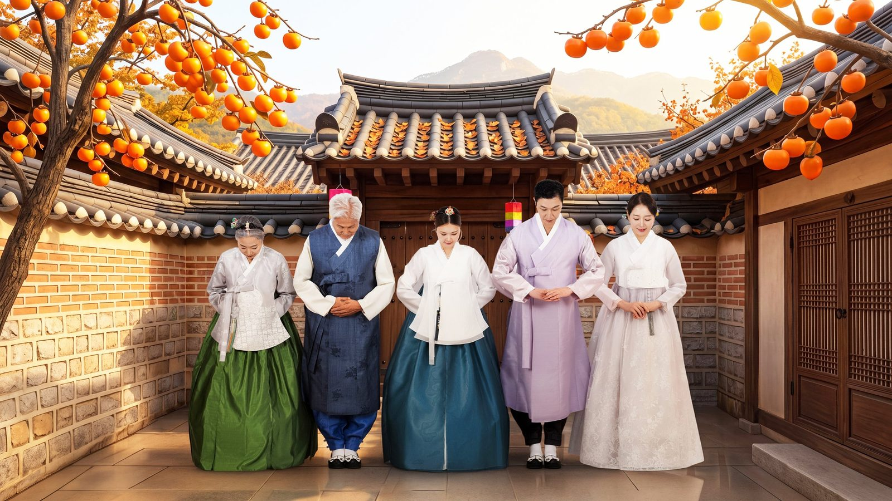
열 번째는 야외입니다. 기와 담장 아래 감나무에 감이 주렁주렁 달린 자리에서 다섯 사람이 담장을 따라 걸었습니다. 걷는 사진은 서 있는 사진보다 자연스럽습니다. 한복은 걷기에 좋은 옷입니다. 치마가 발등을 덮고 저고리 자락이 바람에 조금 흔들립니다. 가을에 오시면 이 자리가 가장 좋습니다.
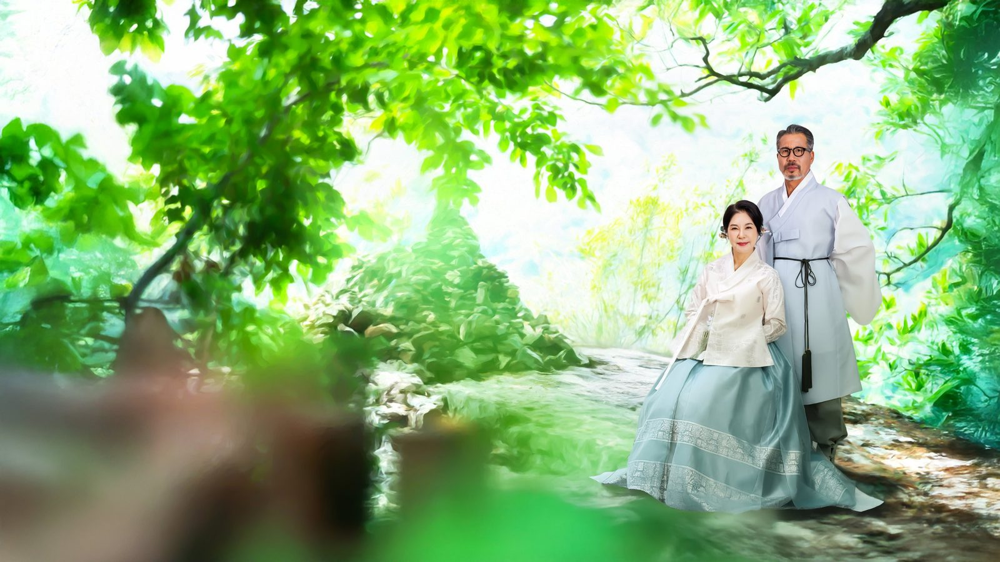
열한 번째는 물가입니다. 초록이 짙은 계곡 옆에 두 사람이 섰습니다. 의령점 마당에는 물소리가 나는 자리가 있습니다. 실내에서 두 시간을 보내면 표정이 조금 지치는데, 그때 문을 열고 나가면 공기가 바뀌고 사진도 바뀝니다. 야외 컷은 마지막에 넣는 것이 좋습니다.
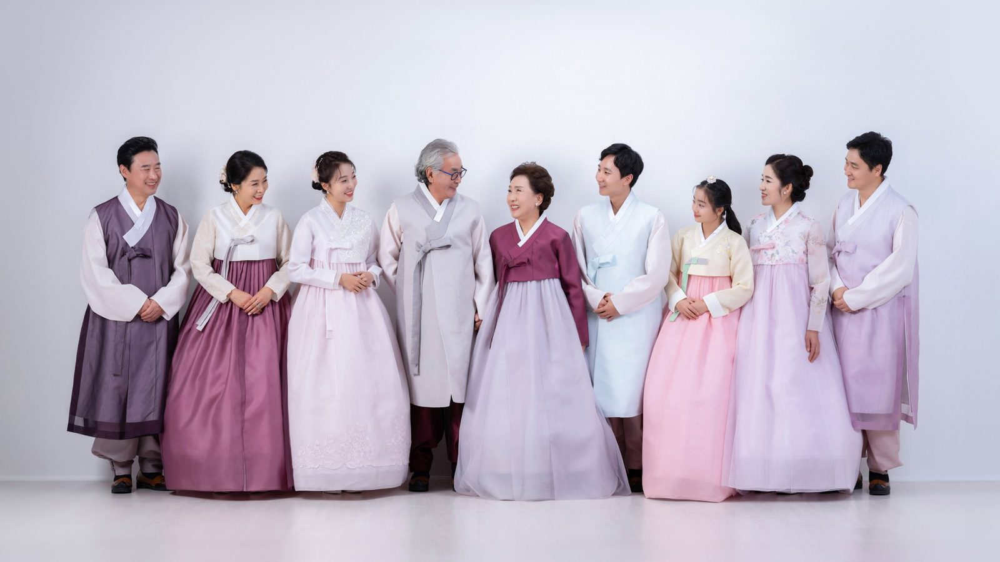
마지막은 아홉 명입니다. 연보라와 자주로 맞추고 한 줄에 세웠습니다. 한 줄로 서면 사진이 길어져서 거실 긴 벽이나 식당 쪽 벽에 잘 맞습니다. 가로로 긴 액자를 생각하신다면 벽의 폭을 재어 오시면 비율을 함께 정해 드립니다.
김작가사진이야기는 경남 의령군 궁류면 청정로 1188에 있습니다. 기와집과 마당, 1,000평 부지가 그대로 배경이 되고, 옆에는 독채 펜션이 있습니다. 창원과 마산, 진주에서 오시는 길은 의령IC를 지나 궁류면 방향으로 오시면 됩니다. 촬영과 함께 하루를 보내고 싶으시면 펜션과 함께 예약하시는 방법도 있습니다.
한복은 의상실에서 대여합니다. 성인 한복과 아이 한복, 갓과 노리개, 머리 장식까지 준비되어 있습니다. 인원과 사이즈, 원하시는 색 계열을 미리 알려 주시면 촬영 전에 맞춰 둡니다. 한복은 사람을 세우는 옷입니다. 그 옷을 입고 가족이 한자리에 서는 날, 사진은 그날의 공기를 오래 데리고 갑니다.
사랑이야기 스튜디오 창원점 / 주소: 경남 창원시 성산구 원이대로 652, 상남동 롯데빌딩 2층 / 전화: 창원점 055-287-8022, 의령점 055-574-3706 / 홈페이지: lovestorykim.com / 인스타그램: @lovestorychangwon / 운영: 김작가
자주 묻는 질문
Q. 한복은 대여할 수 있나요?
A. 네. 의상실에 성인 한복과 아이 한복, 갓과 노리개, 머리 장식이 준비되어 있습니다. 인원과 사이즈를 미리 알려 주시면 촬영 전에 맞춰 둡니다.
Q. 아이 한복도 있나요?
A. 있습니다. 색동저고리와 아이 치마가 여러 사이즈로 준비되어 있습니다. 아이가 낯설어하면 익숙한 옷 위에 두르는 방법도 있으니 편하게 말씀해 주세요.
Q. 야외 촬영은 언제가 좋을까요?
A. 의령점은 마당과 기와 담장이 있어 봄부터 가을까지 야외 촬영을 합니다. 계절과 날씨에 따라 달라지므로 예약하실 때 시기를 함께 정하시는 것이 좋습니다. [확인 필요]

오시는 곳
사랑이야기창원점
- 주소 경남 창원시 성산구 원이대로 652, 상남동 롯데빌딩 2층
- 전화 055-287-8022
- 영업시간 오전 10:00 ~ 오후 7:00
- 예약 전화 상담 · 카카오톡 채널
- 주차 건물 지하 주차장
김작가사진이야기 의령
- 주소 경남 의령군 궁류면 청정로 1188
- 전화 055-574-3706
- 영업시간 오전 10:00 ~ 오후 7:00
- 예약 전화 상담 · 카카오톡 채널
- 주차 전용 주차장
이 글에 한마디
댓글창을 준비하고 있습니다. 그동안 궁금한 점은 카카오채널로 남겨 주시면 바로 답변드립니다.
카카오채널로 한마디 남기기